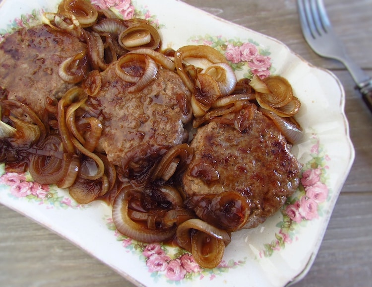

Cebola Frita Caramelizada
Cebola frita caramelizada com objetivo de se juntar com hambúrguer e sentir-se o delicioso sabor.
| 2 convidados 15m Acompanhamento Dificuldade baixa | |
|---|---|
| Ingredientes para fazer Cebola caramelizada para hambúrguer | |
|
|
Passos para fazer Cebola caramelizada para hambúrguer
1 - Comece por descascar as cebolas e cortar em rodelas
2 - Leve ao fogo uma frigideira com a manteiga e, quando derreter, coloque as rodelas de cebola espalhadas. Deixe no fogo brando por uns 5-7 minutos ou até a cebola ficar transparente.
3 - Após o passo anterior, acrescente o shoyu(molho de soja) e o açúcar e mexa para misturar e separar os aros de cebola. Deixe no fogo brando por mais 5 minutos.
4 - Quando a cebola ficar bem macia e caramelada, pode desligar o fogo e servir com o humbúguer que fez a parte